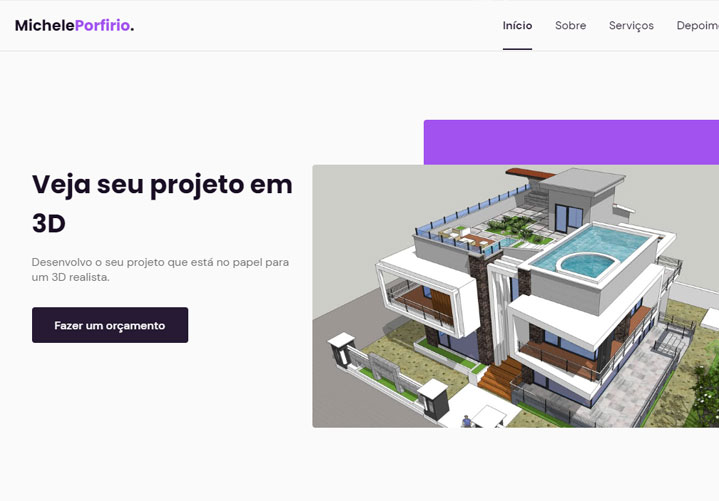

13 de Setembro de 2022
Michele Porfirio

Michele Porfirio é uma página institucional no formato One Page,
responsiva, para usar em diversos tipos de micro, pequena e média
empresas. Contém as seguintes seções: Header, Navigation, Home, Sobre,
Serviços, Depoimentos, Contato e Footer. Esse projeto foi desenvolvido
com as seguintes tecnologias: - HTML - CSS - JavaScript